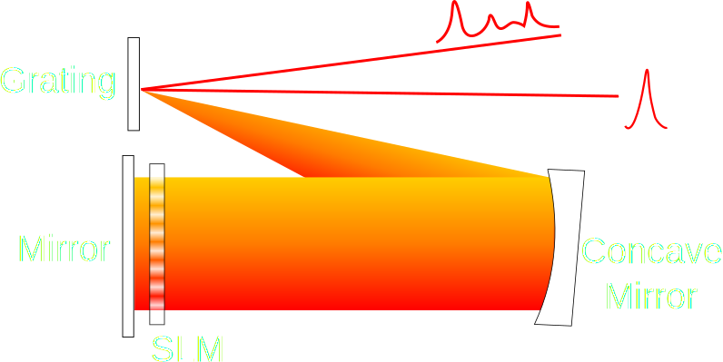

Ogilvie Group
Pulse-shaping tutorial: Part 1
Pulsed lasers are employed widely in achieving nonlinear optical effects due to their high instantaneous intensity that results from limiting their modest pulse energy (nanojoules or 10-9 joule) to a very short time duration (femtoseconds or 10-15 seconds) giving rise to Megawatts (or 106 watts) of power. For comparison, the energy of 1 joule per 1 second is 1 watt of power, equivalent to a very dim light bulb.
Pulse-shaping consists of a wide range of techniques in which the amplitude and/or phase of the spectrum of a pulsed laser are manipulated, to alter the interaction of the pulse with the surrounding media. This tutorial will mainly talk about phase-based pulse-shaping techniques that can be used to achieve linear effects such as compressing a pulse in time to its shortest possible duration, or for something more complex such as actively controlling nonlinear optical interactions such as two-photon absorption. As we will see below, in our research, we use both: 1) to counter the detrimental effect of intervening glass from optical elements that would otherwise result in hopelessly stretched pulse-durations, and 2) to achieve selective excitation of one fluorophore at a time (out of many) in a biological sample with a single broadband laser.
Let's start by looking at the linear dynamics of laser pulses and the effect of transmission through media on short pulses. In part 2 of this tutorial, we will investigate how phase-based techniques can be used to turn on or off nonlinear effects over certain portions of the pulse spectrum.
A tale of two conjugate variables: time and frequency
A broad bandwidth laser such as a mode-locked Ti:Sapphire laser can generate pulses that are as short as a few femtoseconds in duration. The pulse duration of the laser and the corresponding bandwidth (ie. its frequency range) are related via a Fourier transform. In other words, the shorter the pulse, the larger its bandwidth and higher the number of laser modes that need to be supported by the laser cavity (A laser mode is defined as a spatial distribution of electromagnetic field in space with a distinct frequency and polarization). Having a large bandwidth is a necessary, but not a sufficient condition to generate a short pulse. This is where spectral phase comes in.
Each laser mode can be thought of as a separate continuous-wave laser with a sinusoidally varying amplitude and a distinct phase. At any given time, the total electric field of the laser is the sum of the fields of the individual modes. To generate a pulse at any given time, the electric fields of all laser modes need to add constructively such that the instantaneous field generated is large and the laser outputs a pulse of light. This process is called mode-locking [ref] and is achieved by adjusting the phases (ie. time delays) of the individual modes judiciously. To get the shortest pulse, the relative phase difference between any two laser modes should be directly proportional to the difference in their frequencies and the resulting pulse that is generated is called the transform-limited pulse. This phase described as a function of light frequency is called spectral phase.
More rigorously, spectral phase \(\phi(\omega)\) at an arbitrary frequency \(\omega\) may be defined with respect to the central frequency of the laser \(\omega_0\) in terms of a Taylor series as follows:
$$\phi(\omega) = \phi(\omega_0) + \frac{d \phi}{d \omega} (\omega - \omega_0) + \frac{1}{2!} \frac{d^2 \phi}{d \omega^2} (\omega - \omega_0)^2 + \frac{1}{3!}\frac{d^3 \phi}{d \omega^3} (\omega - \omega_0)^3 + \ldots$$
Using this notation, a spectral phase of arbitrary complexity can be described. The first term on the right hand side shifts the overall phase of the pulse, while the second term results in a shift in the pulse location along the time axis (hence also called 'group delay'). Together, these terms have no effect on the pulse shape which remains transform-limited. The terms that are of interest to us, with respect to pulse-shaping, are the third, fourth and higher-order terms. For example, the third term is called the second-order or quadratic phase and will stretch the pulse in the time domain. The corresponding derivative is called second-order dispersion (sometimes called group-delay dispersion or GDD) and is usually expressed in terms of \(\mathrm{fs}^2\) which we will use here (other definitions are possible - see this great reference). Similarly, for the higher order terms we get cubic phase, quartic phase, etc. and the derivatives are accordingly third-order dispersion \((\mathrm{fs}^3)\), fourth-order dispersion \((\mathrm{fs}^4)\), etc. These higher-order phases will also distort the pulse in time in addition to lengthening its duration, as we will see below.
The interactive visualization above shows the electric field spectrum and time signature of a Gaussian pulse in normalized units. The reader is encouraged to adjust the bandwidth slider to see how the pulse changes in the wavelength and time domain.
But therein lies a catch!
Have you found the problem yet? You may have noticed that as you increase the bandwidth, the pulse width initially decreases as expected, but eventually it starts increasing again. What's going on here?
The simulation code was written to include a hidden spectral phase, which prevents the pulse from exhibiting transform-limited behaviour. Using the additional control sliders, the reader may externally compensate this built-in spectral phase to achieve the shortest (ie. transform-limited) pulse width. The program will let you know when you have hit the right balance. Click here to reveal the hidden dispersion. This also highlights an interesting phenomenon, that pulse broadening is a function of dispersion as well as the pulse bandwidth. The broader the spectrum, the more sensitive the pulse is to dispersion-induced stretching (see Eqn. 8 and Fig. 2 in the above mentioned ref). This tuning of spectral phase is thus, highly critical to achieving the shortest possible pulse width.
Where does this dispersion come from? Any time light travels through an optical medium that is not a perfect vacuum, we observe dispersion, because in any medium, different wavelengths (or frequencies, actually) travel at different speeds. This means that even if the phases of the individual modes were initially perfectly arranged, when they pass through a piece of glass such as a microscope objective, they get rearranged and are no longer proportional to their frequencies. This type of dispersion is called material dispersion and for visible frequencies the derivatives discussed above are almost always positive. For visible wavelengths, therefore, negative dispersion has to be generated by means of a spatial structure (eg. waveguides) or by geometric means as we will see below. Even before the light leaves the laser to encounter a piece of glass it encounters significant material dispersion from the gain medium, any transmissive optics such as lenses and even the length of air column that makes up the laser cavity. In a mode-locked laser, this spectral phase tuning or dispersion-compensation is achieved geometrically using a prism-pair or two, or in some designs, it is achieved with special dispersion-compensating mirrors in combination with barium fluoride (BaF2) wedge-pairs for fine-tuning [ref]. Outside the laser, tunable dispersion-compensation can be achieved using a device called a "pulse-shaper".
Typically, a pulse-shaper comprises of the following three elements: 1) a spatially dispersive element such as a grating that splits the light spatially into its constituent individual modes, 2) a collimating element such as a lens (or better, a concave mirror) that converts the spreading beam into a collimated beam, 3) actively tunable phase delay generator such as a linear array of liquid crystal based device called spatial light modulator (SLM). The light is then reflected back through the setup by a mirror to reconstitute the light pulse. Other designs exist as well that use acousto-optic modulators for generating frequency-dependent delays. By applying voltages of appropriate values to each pixel on the SLM, the phases for each frequency (or a group of closely spaced frequencies, depending on the optical resolution of the SLM) can be modified to compress a pulse to its transform-limited duration. For a detailed review of pulse-shaper geometries see this wonderful review article.
So, how much phase should one put on the pulse-shapers to recover transform-limited pulses? Various self-referenced techniques exist to measure spectral phase including SPIDER, FROG, MIIPS, d-scan and their variants. Once the spectral phase is measured, the opposite phase can be projected on the SLM, resulting in a transform-limited pulse. But, pulse-shapers can do much more than generating transform-limited pulses. In fact, pulsed lasers are used for facilitating nonlinear optical interactions and pulse-shaping can be used to not only achieve transform-limited pulses, but also to either promote or disallow certain nonlinear interactions to achieve coherent control of light-mediated processes. To see how this is done, continue on to part 2 of this tutorial.
This tutorial is authored by Amar Bhagwat in HTML and Javascript and is powered by the data visualization library D3.js and the numerical calculation library Numeric Javascript. The equations are typeset in MathJax.